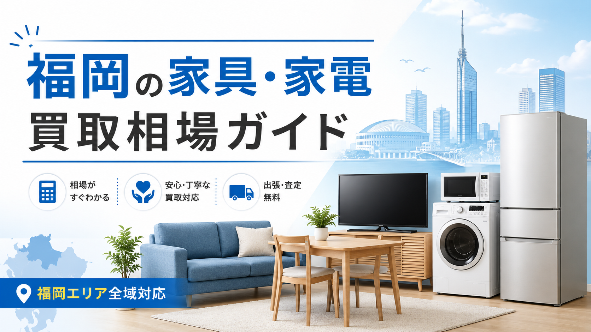

九州お問合せ 10:00-20:00 年中無休
LINE・WEB受付
LINE査定
PRICE GUIDE / FUKUOKA
福岡で冷蔵庫・洗濯機・テレビ・エアコン・ソファ・ダイニング・ベッド・食器棚など、家具家電を売るときの買取相場の目安を主要品目別にまとめました。査定で見られるポイント、高く売るコツ、出張買取の使い分けまで、売る前に押さえておきたい知識を解説します。

福岡で引っ越し、買い替え、実家の片付け、単身赴任の終了などをきっかけに、家具や家電を売りたいと考える人は多くいます。
特に福岡市内、北九州、久留米、春日、大野城、糟屋郡エリアでは、マンション住まい・転勤・学生の引っ越し需要が多く、状態の良い家具や家電は中古市場でも一定の需要があります。
ただし、家具・家電の買取価格は「購入時の価格」だけで決まるわけではありません。同じ冷蔵庫や洗濯機でも、メーカー、年式、容量、状態、付属品の有無、搬出のしやすさ、季節、店舗や業者の在庫状況によって査定額は大きく変わります。
この記事では、福岡で家具・家電を売る前に知っておきたい買取相場の目安、査定で見られるポイント、高く売るコツ、出張買取を利用する際の注意点をわかりやすく解説します。
家具や家電の買取価格は、基本的に「再販売しやすいかどうか」で決まります。
リサイクルショップや出張買取業者は、買い取った商品を清掃・動作確認・運搬・保管したうえで再販売します。そのため、再販売までに手間がかかる商品、売れるまで時間がかかる商品、搬出が大変な商品は、買取価格が低くなりやすい傾向があります。
一方で、人気メーカーの家電、年式が新しい家電、状態の良い家具、コンパクトで需要の高い家具は、比較的査定額がつきやすくなります。
福岡では、単身者向けの冷蔵庫・洗濯機・電子レンジ・テレビ、ファミリー向けの大型冷蔵庫・ドラム式洗濯機、状態の良いダイニングセットやソファなどは需要があります。
福岡で買取されやすい家具・家電には、いくつか共通点があります。
まず、家電の場合は年式が重要です。一般的に製造から5年以内の家電は買取対象になりやすく、7年を超えると査定額が下がりやすくなります。10年以上経過した家電は、状態が良くても買取不可になるケースがあります。
家具の場合は、ブランド、デザイン、状態、サイズが重要です。ニトリ、無印良品、IKEA、カリモク、unico、LOWYA、ACTUSなど、一定の知名度があるブランド家具は査定対象になりやすいです。
また、福岡市内のマンションやアパートでは、大型すぎる家具よりも、搬入しやすく使いやすいサイズの家具の方が再販売しやすい傾向があります。
冷蔵庫は、家電の中でも需要が高い商品のひとつです。特に単身者向けの2ドア冷蔵庫、ファミリー向けの大型冷蔵庫、人気メーカーの高年式モデルは買取対象になりやすいです。
| 種類 | 状態・年式 | 買取相場の目安 |
|---|---|---|
| 1ドア小型冷蔵庫 | 5年以内 | 500円〜3,000円 |
| 2ドア冷蔵庫 | 5年以内 | 2,000円〜12,000円 |
| 3ドア冷蔵庫 | 5年以内 | 5,000円〜25,000円 |
| 400L以上の大型冷蔵庫 | 5年以内 | 10,000円〜60,000円 |
| 人気メーカー高年式モデル | 3年以内 | 30,000円〜100,000円以上 |
パナソニック、日立、三菱、東芝、シャープなどの国内メーカーは比較的査定がつきやすい傾向があります。
一方で、年式が古いもの、庫内に強い臭いがあるもの、棚板やケースが欠品しているもの、外装に大きなへこみがあるものは査定額が下がります。
洗濯機も福岡では需要の高い家電です。単身者向けの縦型洗濯機は、学生や一人暮らし向けに需要があります。ドラム式洗濯機は新品価格が高いため、中古でも状態が良ければ高価買取になりやすいです。
| 種類 | 状態・年式 | 買取相場の目安 |
|---|---|---|
| 縦型洗濯機 4〜5kg | 5年以内 | 1,000円〜8,000円 |
| 縦型洗濯機 6〜8kg | 5年以内 | 3,000円〜18,000円 |
| 縦型洗濯乾燥機 | 5年以内 | 8,000円〜35,000円 |
| ドラム式洗濯機 | 5年以内 | 20,000円〜100,000円以上 |
| 高年式・人気モデル | 3年以内 | 50,000円〜150,000円以上 |
洗濯機は動作状態だけでなく、内部の汚れや臭いも見られます。洗濯槽のカビ、排水ホースの汚れ、給水ホースや取扱説明書の有無も査定に影響します。
ドラム式洗濯機は重量があるため、搬出環境によって査定額が変わることもあります。エレベーターの有無、階段作業、設置場所の狭さなども事前に伝えておくとスムーズです。
テレビはサイズ、メーカー、年式、画質性能によって査定額が大きく変わります。特に4K対応テレビ、有機ELテレビ、大型液晶テレビは需要があります。一方で、古い液晶テレビや小型テレビは買取価格が低くなる傾向があります。
| 種類 | 状態・年式 | 買取相場の目安 |
|---|---|---|
| 24インチ以下 | 5年以内 | 500円〜5,000円 |
| 32インチ | 5年以内 | 2,000円〜10,000円 |
| 40〜43インチ | 5年以内 | 5,000円〜25,000円 |
| 50インチ以上 | 5年以内 | 10,000円〜60,000円 |
| 4K・有機ELテレビ | 3年以内 | 30,000円〜150,000円以上 |
ソニー、パナソニック、シャープ、東芝、LGなどの人気メーカーは査定対象になりやすいです。リモコン、B-CASカード、電源コード、スタンド、説明書がそろっていると査定が安定しやすくなります。
電子レンジやオーブンレンジは、一人暮らし・学生・単身赴任者向けに需要があります。単機能レンジよりも、オーブンレンジ、スチームオーブンレンジ、高機能モデルの方が査定額は高くなりやすいです。
| 種類 | 状態・年式 | 買取相場の目安 |
|---|---|---|
| 単機能電子レンジ | 5年以内 | 500円〜3,000円 |
| オーブンレンジ | 5年以内 | 1,000円〜10,000円 |
| スチームオーブンレンジ | 5年以内 | 5,000円〜30,000円 |
| 高機能人気モデル | 3年以内 | 10,000円〜60,000円 |
庫内の焦げ、臭い、汚れが強い場合は査定額が下がりやすいです。売る前に庫内をきれいに拭いておくと印象が良くなります。
エアコンは、取り外し工事が必要になるため、他の家電より査定条件が複雑です。福岡は夏の暑さが厳しいため、エアコンの中古需要はあります。ただし、年式、冷房能力、メーカー、設置状況、取り外し費用によって買取価格が大きく変わります。
| 種類 | 状態・年式 | 買取相場の目安 |
|---|---|---|
| 6畳用エアコン | 5年以内 | 3,000円〜15,000円 |
| 8〜10畳用エアコン | 5年以内 | 5,000円〜25,000円 |
| 12畳以上のエアコン | 5年以内 | 10,000円〜50,000円 |
| 高性能・省エネモデル | 3年以内 | 20,000円〜80,000円以上 |
エアコンは、取り外し費用が買取額から差し引かれる場合があります。業者によっては、取り外し込みで無料回収、または買取になることもあります。
自分で無理に取り外すと、故障やガス漏れの原因になるため、基本的には専門業者に依頼するのが安全です。
ソファは家具の中でも人気がありますが、状態によって査定額が大きく変わります。汚れ、へたり、破れ、臭い、ペットの毛、タバコ臭があると買取が難しくなります。一方で、ブランド品やデザイン性の高いソファは高価買取になることがあります。
| 種類 | 状態 | 買取相場の目安 |
|---|---|---|
| 1人掛けソファ | 良好 | 500円〜5,000円 |
| 2人掛けソファ | 良好 | 1,000円〜10,000円 |
| 3人掛けソファ | 良好 | 3,000円〜20,000円 |
| カウチソファ | 良好 | 5,000円〜40,000円 |
| ブランドソファ | 良好 | 20,000円〜100,000円以上 |
unico、カリモク、ACTUS、無印良品、ニトリの上位モデルなどは、状態が良ければ査定対象になりやすいです。
大型ソファは搬出のしやすさも重要です。階段作業が必要な場合や、分解できない大型ソファは買取価格が下がることがあります。
ダイニングセットは、ファミリー層や新生活需要があるため、状態が良ければ買取されやすい家具です。特に4人掛け、2人掛けのダイニングセットは需要があります。天板の傷、椅子のぐらつき、座面の汚れ、脚の傷などが査定ポイントになります。
| 種類 | 状態 | 買取相場の目安 |
|---|---|---|
| 2人掛けダイニングセット | 良好 | 1,000円〜8,000円 |
| 4人掛けダイニングセット | 良好 | 3,000円〜20,000円 |
| 6人掛けダイニングセット | 良好 | 5,000円〜30,000円 |
| ブランドダイニングセット | 良好 | 20,000円〜100,000円以上 |
木製でデザイン性が高いもの、北欧風、ナチュラル系、シンプルなデザインは中古市場でも人気があります。
ベッドは買取対象になる場合がありますが、マットレスは衛生面の理由から買取不可になるケースもあります。フレームのみ、収納付きベッド、ブランドベッド、状態の良いマットレスは査定対象になることがあります。
| 種類 | 状態 | 買取相場の目安 |
|---|---|---|
| シングルベッドフレーム | 良好 | 500円〜5,000円 |
| セミダブル・ダブルフレーム | 良好 | 1,000円〜10,000円 |
| 収納付きベッド | 良好 | 3,000円〜20,000円 |
| ブランドベッド | 良好 | 10,000円〜80,000円 |
| マットレス | 状態・ブランド次第 | 0円〜50,000円以上 |
マットレスは、シミ、へたり、臭いがあると買取は難しくなります。高級ブランドのマットレスでも、使用感が強い場合は査定額が大きく下がります。
食器棚やキッチンボードは、サイズが大きく搬出が大変な家具ですが、状態が良ければ需要があります。特に、ニトリ、パモウナ、綾野製作所、unico、無印良品などのキッチンボードは査定対象になりやすいです。
| 種類 | 状態 | 買取相場の目安 |
|---|---|---|
| 小型食器棚 | 良好 | 500円〜5,000円 |
| 中型食器棚 | 良好 | 2,000円〜15,000円 |
| 大型キッチンボード | 良好 | 5,000円〜40,000円 |
| ブランドキッチンボード | 良好 | 20,000円〜100,000円以上 |
大型家具は、搬出経路が重要です。エレベーターの有無、階段の幅、分解可能かどうかを事前に確認しておきましょう。
ブランド家具は、一般的な家具よりも高価買取が期待できます。福岡でも、デザイン性の高い家具、状態の良いブランド家具、人気シリーズの家具は需要があります。
ブランド家具は、購入時のレシート、保証書、商品名、シリーズ名がわかる資料があると査定がスムーズです。
家具・家電を少しでも高く売るには、査定前の準備が大切です。
まず、できる範囲で清掃しましょう。冷蔵庫の庫内、洗濯機の排水周り、電子レンジの庫内、テレビの画面、家具のホコリや汚れを落としておくだけでも印象が変わります。
次に、付属品をそろえることも重要です。リモコン、説明書、保証書、棚板、ネジ、ケーブル、ホースなどが欠品していると査定額が下がる場合があります。
また、複数の商品をまとめて査定に出すのもおすすめです。冷蔵庫、洗濯機、電子レンジ、テレビ、家具などをまとめて依頼すると、業者側の出張効率が良くなり、買取条件が良くなることがあります。
福岡で家具・家電を売る方法には、主に出張買取と店頭買取があります。
店頭買取は、自分で商品を店舗まで持ち込む方法です。小型家電や小さな家具であれば利用しやすいですが、大型家具や大型家電には向いていません。
出張買取は、業者が自宅まで来て査定・搬出してくれる方法です。冷蔵庫、洗濯機、ソファ、ダイニングセット、食器棚など、大型の商品を売りたい場合に便利です。
福岡市内や近郊エリアでは出張買取に対応している業者も多く、引っ越し前や片付け時に利用しやすい方法です。
出張買取の大きなメリットは、大型家具や家電を自分で運ばなくてよいことです。冷蔵庫や洗濯機、ソファ、ベッド、食器棚などは、自家用車で運ぶのが難しく、無理に運ぶと壁や床を傷つける可能性もあります。
出張買取なら、査定から搬出までまとめて依頼できるため、引っ越しや片付けの負担を減らせます。
また、複数の商品をまとめて売れる点もメリットです。家電だけでなく、家具、雑貨、ブランド品、楽器、工具などをまとめて査定できる業者もあります。
すべての家具・家電に買取価格がつくわけではありません。以下のような商品は、買取が難しい場合があります。
ただし、買取価格がつかない場合でも、他の商品とまとめることで引き取り可能になるケースがあります。処分費用がかかる場合もあるため、事前に確認しておきましょう。
冷蔵庫、洗濯機、テレビ、エアコンは、家電リサイクル法の対象品です。買取できない場合、通常の粗大ごみとして処分できないため、リサイクル料金や収集運搬料金が必要になることがあります。
そのため、年式が古い家電を処分したい場合は、買取可能か、無料回収か、有料処分かを事前に確認することが大切です。
注意：特に引っ越し直前に依頼すると、買取不可だった場合に処分の手配が間に合わないことがあります。余裕を持って査定を依頼しましょう。
家具・家電は、売るタイミングによって査定額が変わることがあります。
特に需要が高まりやすいのは、引っ越しシーズンの前です。福岡では、2月〜4月にかけて学生、転勤者、新社会人の引っ越し需要が高まります。
この時期は、冷蔵庫、洗濯機、電子レンジ、テレビ、ベッド、テーブルなどの新生活向け商品が動きやすくなります。一方で、引っ越しシーズンが終わった後は在庫が増え、査定が厳しくなる場合もあります。
エアコンは夏前、暖房器具は冬前など、季節家電は需要が高まる少し前に売るのがおすすめです。
福岡市内では、単身者向けの商品とファミリー向けの商品の両方に需要があります。天神、博多、薬院、大橋、西新、姪浜、香椎、千早などは、単身者・ファミリー・転勤者が多く、中古家具・家電の需要が比較的安定しています。
単身者向けでは、2ドア冷蔵庫、縦型洗濯機、電子レンジ、小型テレビ、ローテーブル、ベッドフレームなどが人気です。ファミリー向けでは、大型冷蔵庫、ドラム式洗濯機、ダイニングセット、ソファ、キッチンボードなどが需要があります。
福岡県内では、福岡市だけでなく、北九州、久留米、春日、大野城、筑紫野、糟屋郡などでも家具・家電の買取需要があります。
ただし、出張対応エリアは業者によって異なります。福岡市内は対応していても、郊外や遠方エリアでは出張費がかかる場合があります。大型家具や家電を売る場合は、出張エリア、出張費、査定料、キャンセル料の有無を事前に確認しておきましょう。
家具・家電の買取価格は、業者によって大きく異なります。
ある業者では買取不可でも、別の業者では買取対象になることがあります。また、家電に強い業者、家具に強い業者、ブランド家具に強い業者、まとめ売りに強い業者など、得意分野も違います。
そのため、福岡で家具・家電を売る場合は、複数の業者に査定を依頼するのがおすすめです。
一括査定を利用すれば、複数業者の査定額を比較できるため、より高く売れる可能性があります。特に、大型家具や高年式家電、ブランド家具を売る場合は、1社だけで決めずに比較する価値があります。
出張買取を依頼する前に、以下の情報を整理しておくと査定がスムーズです。
家電の場合は、型番と製造年が重要です。冷蔵庫や洗濯機は本体に貼られているラベルで確認できます。家具の場合は、ブランド名、シリーズ名、サイズ、購入時期がわかると査定しやすくなります。
家具・家電は時間が経つほど価値が下がりやすい商品です。特に家電は年式が重要なため、使わなくなったら早めに査定に出すことが大切です。
また、引っ越し直前は予約が混み合いやすく、希望日に出張買取を依頼できない場合があります。福岡で家具・家電を売る予定がある場合は、遅くとも引っ越しの2〜3週間前には査定を依頼しておくと安心です。
福岡で家具・家電を売る場合、買取相場は商品によって大きく異なります。
冷蔵庫、洗濯機、テレビ、電子レンジ、エアコンなどの家電は、年式・メーカー・状態が重要です。ソファ、ダイニングセット、ベッド、食器棚などの家具は、ブランド・状態・サイズ・搬出環境が査定に影響します。
高く売るためには、清掃をして、付属品をそろえ、型番や年式を確認し、複数の業者に査定を依頼することが大切です。
特に福岡では、引っ越しや転勤、学生の新生活需要が多いため、状態の良い家具・家電は中古市場でも需要があります。
不要になった家具・家電を処分する前に、まずは買取相場を確認し、出張買取や一括査定を活用して、できるだけ条件の良い売却を目指しましょう。
家具・家電・家まるごと、バリ高く。LINEで写真を送るだけで仮査定OK。
最短即日でお伺いします。査定無料・キャンセル料無料。